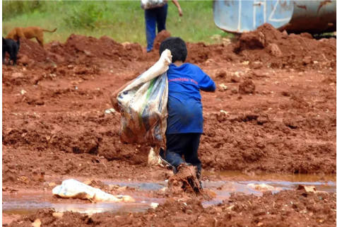

De acordo com o IBGE, a região Norte do Brasil tem 17,7% dos trabalhadores infantis, o que é maior do que a
proporção de pessoas na faixa etária de 5 a 17 anos na região, que é de 10,8%.

Mais de 2500 crianças e adolescentes estavam em situação de exploração do trabalho infantil, em 2023. Só em
Roraima, foram registrados 101 casos, sendo o maior número de um estado da região Norte. A informação foi
divulgada pelo Ministério do Trabalho e Emprego (MTE), que por meio da Auditoria Fiscal do Trabalho, afastou
o total de 2.564 jovens.